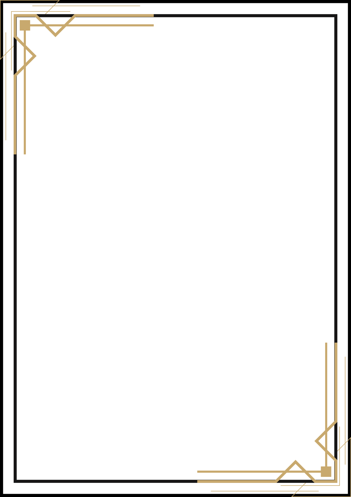

Du hast jemanden verloren, der dein Herz geformt hat.
Solche Menschen gehen nicht wirklich.
Sie leben weiter in dem, was du bist.
„Kommet her zu mir alle, die ihr mühselig
und beladen seid, so will ich euch erquicken.“
Matthäus 11,28